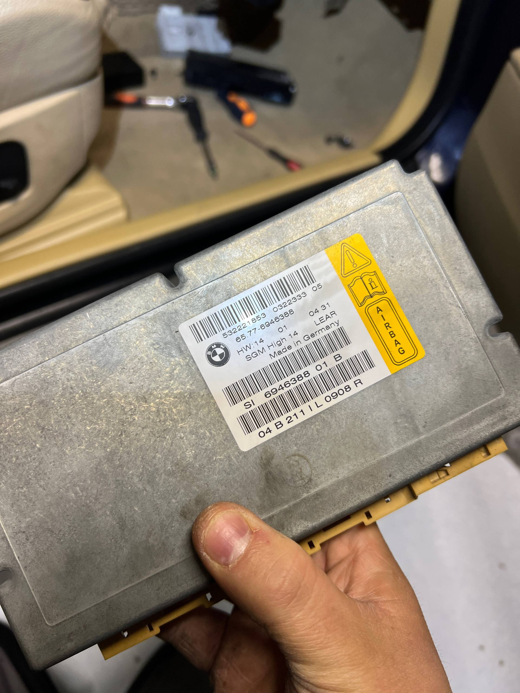
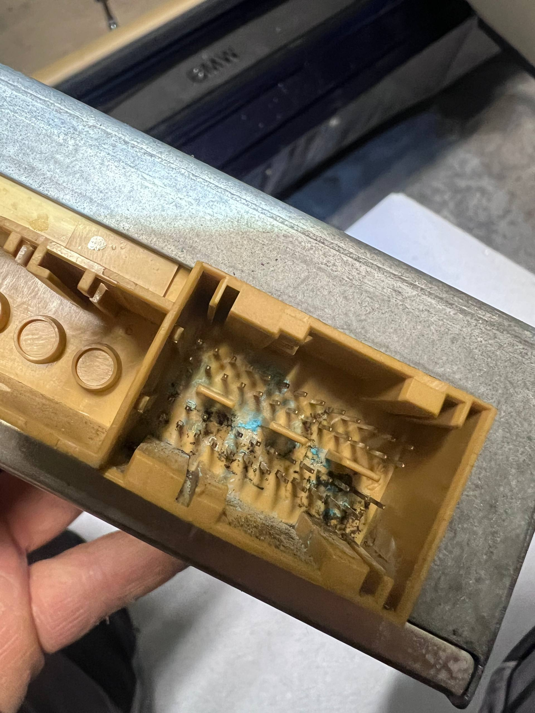
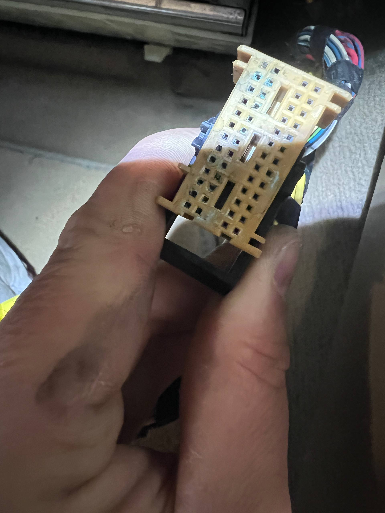
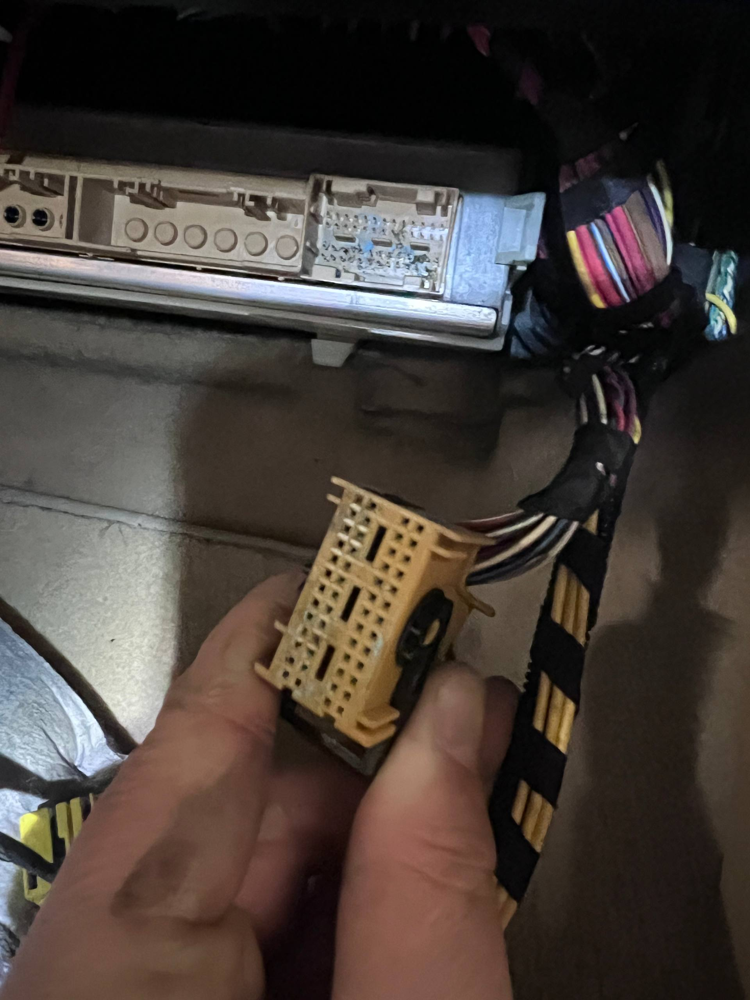
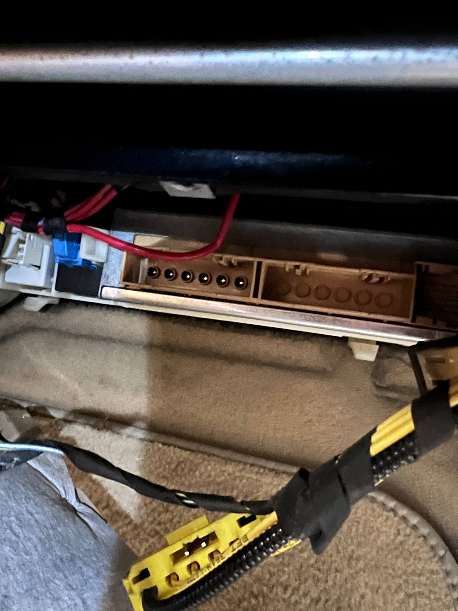

W BMW E61 530d z 2008 roku wycieraczki pracowały cały czas, a przyczyną okazała się korozja złączy modułu SGM – sterownika-bramki pod schowkiem pasażera, do którego dostała się woda z odpływów szyberdachu. Wymieniliśmy skorodowane terminale w złączach i dolutowaliśmy parę przewodów, po czym wycieraczki działają normalnie. Auto naprawialiśmy w naszym warsztacie w Gdańsku.





BMW 530d E61 z 2008 roku trafiło do nas z jednym, bardzo uciążliwym objawem: wycieraczki pracowały cały czas, niezależnie od tego, czego chciał kierowca.
Taki objaw kusi, żeby od razu szukać winy w przełączniku pod kierownicą albo w silniczku wycieraczek. W autach tej generacji wycieraczki nie są jednak sterowane bezpośrednio przełącznikiem – polecenie przechodzi przez magistrale danych i kilka sterowników, więc usterka może siedzieć zupełnie gdzie indziej.
Moduł SGM w BMW E61 znajduje się pod schowkiem po stronie pasażera i to w jego złączach znaleźliśmy przyczynę usterki. SGM to sterownik, który w BMW serii 5 E60/E61 pełni rolę bramki (gateway) – przekazuje komunikaty między magistralami danych poszczególnych sterowników – i jednocześnie obsługuje system poduszek powietrznych.
Po odpięciu wtyczek wszystko było widać gołym okiem: zgniłe piny i zielony nalot korozji w złączach SGM.
Wilgoć dostała się do złączy modułu SGM z odpływów szyberdachu. W autach z szyberdachem woda z ramy dachu spływa rurkami odpływowymi na zewnątrz; gdy odpływ się zatka albo rozszczelni, woda zaczyna ciec do wnętrza auta.
W BMW E61 sterownik SGM siedzi nisko pod schowkiem, więc woda, która dostanie się do kabiny tą drogą, może trafić prosto na jego złącza. Zielony nalot na stykach to typowy ślad takiej długotrwałej wilgoci.
Korozja złączy modułu SGM zaburza komunikację, a wycieraczki, które same się włączają, to jeden z możliwych skutków. Skorodowany styk to niepewne połączenie: sygnał słabnie, zanika albo przez wilgotny nalot przenika na sąsiedni pin.
Gdy dotyczy to sterownika-bramki, przez który przechodzą informacje z wielu systemów, odbiorniki mogą dostawać zniekształcone lub fałszywe polecenia – tak jak wycieraczki w tym BMW E61.
W złączach modułu SGM wymieniliśmy skorodowane terminale, a parę przewodów trzeba było dolutować przy złączu. Po naprawie wycieraczki w BMW E61 przestały pracować samoczynnie i działają tak, jak powinny.
Właścicielom E60/E61 z szyberdachem radzimy pilnować drożności odpływów – to tańsze niż walka ze skutkami wody w instalacji. Jeśli w Twoim aucie odbiorniki żyją własnym życiem, zacznij od diagnostyki komputerowej, a gdy podejrzenie pada na instalację – od szukania usterek w wiązkach i złączach. Zapraszamy do elektroden w Gdańsku, Zawodzie 35, od poniedziałku do soboty w godzinach 8:00–20:00.